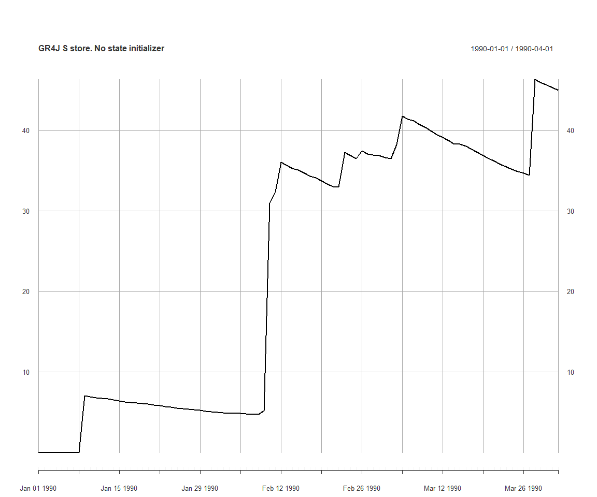
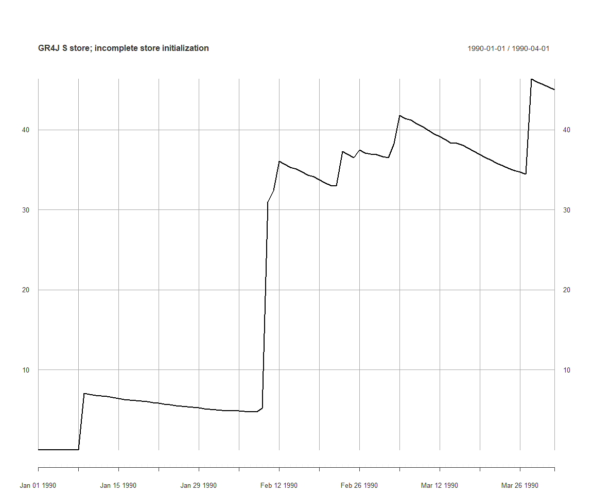
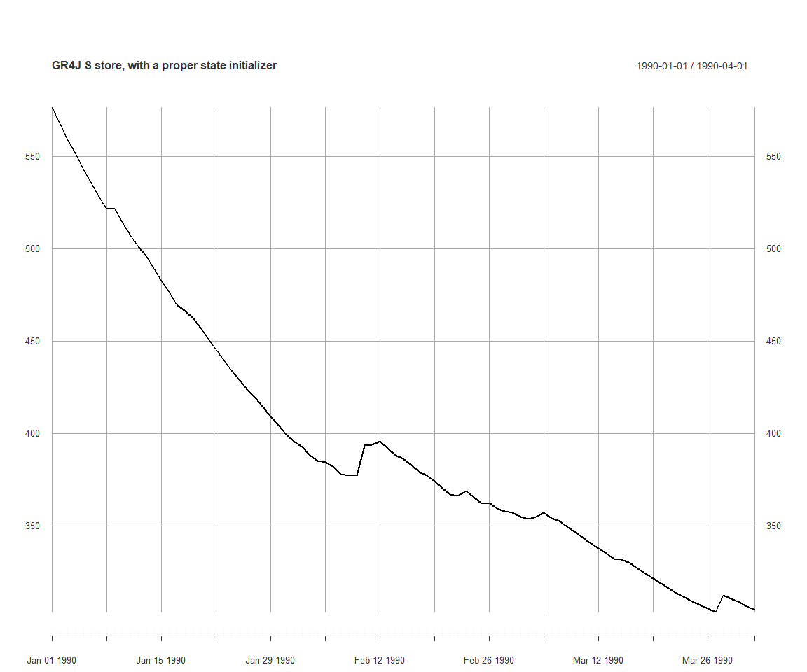

Calibration with initial model memory states as parameters
Jean-Michel Perraud 2020-01-28
Calibration with initial model memory states as parameters
About this document
This document was generated from an R markdown file on 2020-01-28 10:52:32. It is a vignette to demonstrate features in SWIFT to calibrate a model with initial model states as a parameter.
Essentials of setting up a calibration of initial states
This vignette will illustrate how to define two meta-parameters, S0 and R0, controlling the initial level of stores in the GR4J model, as fraction of the store capacities.
We’ll load a simple catchment with one subarea only; the feature applies equally to catchment with multiple sub-areas
library(swift)
modelId <- 'GR4J'
ms <- createSubareaSimulation(dataId='MMH', simulStart='1990-01-01', simulEnd='2005-12-31',
modelId=modelId, tstep='daily', varNameRain='P', varNamePet='E')We define a few model state identifiers, and set them to be recorded to time series.
gr4jModelVars <- runoffModelVarIds(modelId)
print(gr4jModelVars)## [1] "P" "E" "runoff" "S" "R"
## [6] "Ps" "Es" "Pr" "ech1" "ech2"
## [11] "Perc" "x1" "x2" "x3" "x4"
## [16] "UHExponent" "PercFactor"elementId <- 'subarea.Subarea'
mkVarId <- function (shortName) { paste0(elementId, '.', shortName) }
runoffId <- mkVarId('runoff')
sVarId <- mkVarId('S')
rVarId <- mkVarId('R')
recordState(ms, c(runoffId, sVarId, rVarId))We’ll set up a short runtime span, so that we illustrate the state initialisation feature.
obsRunoff <- sampleSeries('MMH', 'flow') #actually, this is a time series of runoff depth, not streamflow rate
obsRunoff[which(obsRunoff < -1)] <- NA
s <- start(obsRunoff)
w <- s
e <- s + lubridate::days(90)
setSimulationSpan(ms, s, e)Let’s apply some default model parameters to the model:
(pSpecGr4j <- joki::getFreeParams(modelId))## Name Value Min Max
## 1 x1 650.488000 1 3000
## 2 x2 -0.280648 -27 27
## 3 x3 7.891230 1 660
## 4 x4 18.917200 1 240pSpecGr4j$Name <- mkVarId(pSpecGr4j$Name)
# TODO : a print function for native parameterizers.
p <- createParameterizer(type='Generic', pSpecGr4j)
parameterizerAsDataFrame(p)## Name Min Max Value
## 1 subarea.Subarea.x1 1 3000 650.488000
## 2 subarea.Subarea.x2 -27 27 -0.280648
## 3 subarea.Subarea.x3 1 660 7.891230
## 4 subarea.Subarea.x4 1 240 18.917200applySysConfig(p, ms)We get a time series of S if we run it at this point; the starting value is zero.
execSimulation(ms)
plot(getRecorded(ms, sVarId), main='GR4J S store. No state initializer')
Let’s define S0 and R0 parameters such that for each GR4J model instance, S = S0 * x1 and R = R0 * x3
pStates <- linearParameterizer(
c("S0","R0"),
c("S","R"),
c("x1","x3"),
c(0.0,0.0),
c(1.0,1.0),
c(0.9,0.9),
'each subarea')If one applies this parameterizer pState to the system, the the S store is set to the expected value relative to x1.
applySysConfig(pStates, ms)
getStateValue(ms, sVarId)## subarea.Subarea.S
## 585.4392However this is not enough to define a parameterizer as an initial state. If executing the simulation, the time series of S still starts at zero, because the resetting the model overrides the state S:
execSimulation(ms)
plot(getRecorded(ms, sVarId), main='GR4J S store; incomplete store initialization')
You need to define a new parameterizer, that makes sure that the model is reset to the expected initial value.
initParameterizer <- makeStateInitParameterizer(pStates)
applySysConfig(initParameterizer, ms)
execSimulation(ms)
plot(getRecorded(ms, sVarId), main='GR4J S store, with a proper state initializer')
There is logic in keeping the two previous steps in defining a parameterizer as separate, hence this present vignette emphasizes the importance of these two steps.
Once you have defined this parameterizer using {r eval=FALSE} makeStateInitParameterizer, you can define a calibration objective the usual way. This vignette does not include calibration steps; please refer to other vignettes.
p <- concatenateParameterizers(p, initParameterizer)
parameterizerAsDataFrame(p)## Name Min Max Value
## 1 subarea.Subarea.x1 1 3000 650.488000
## 2 subarea.Subarea.x2 -27 27 -0.280648
## 3 subarea.Subarea.x3 1 660 7.891230
## 4 subarea.Subarea.x4 1 240 18.917200
## 5 R0 0 1 0.900000
## 6 S0 0 1 0.900000objective <- createObjective(ms, runoffId, obsRunoff, 'NSE', w, e)
score <- getScore(objective, p)
print(score)## $scores
## NSE
## -5.894663
##
## $sysconfig
## Name Min Max Value
## 1 subarea.Subarea.x1 1 3000 650.488000
## 2 subarea.Subarea.x2 -27 27 -0.280648
## 3 subarea.Subarea.x3 1 660 7.891230
## 4 subarea.Subarea.x4 1 240 18.917200
## 5 R0 0 1 0.900000
## 6 S0 0 1 0.900000